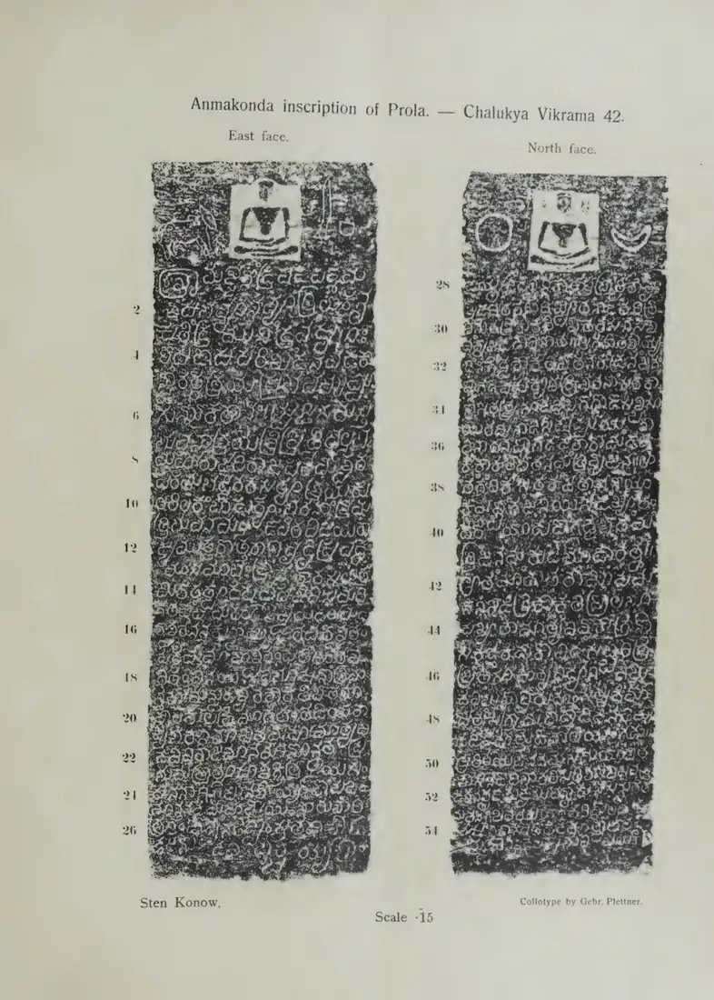
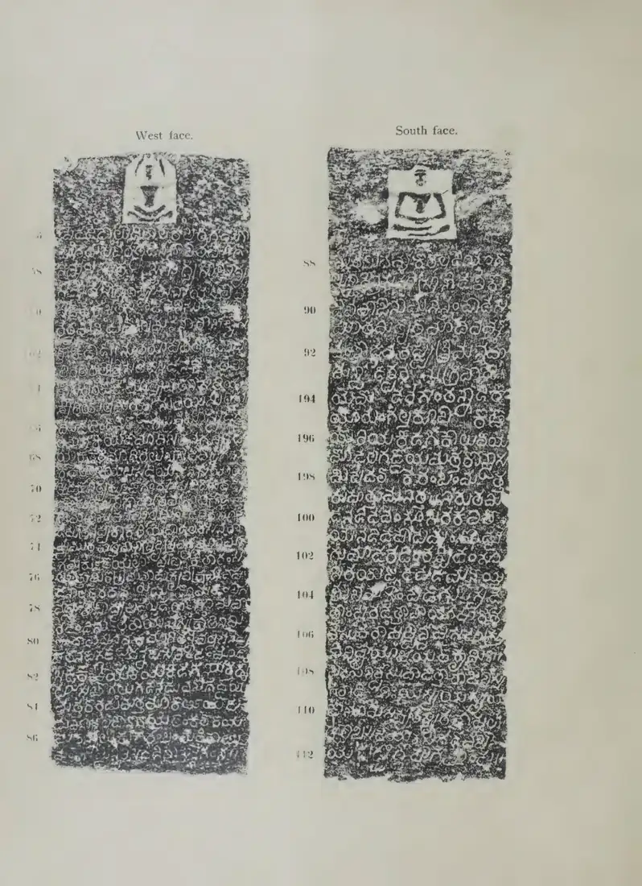

Anmakoṇda inscription of Próla
ANMAKONDA INSCRIPTION OF PROLA;
The Chalukya-Vikrama year Forty-Two.
The Chalukya-Vikrama year Forty-Two.
By H. KRISHNA SASTRI, B.A.
On a hillock to the south of Hanumkoūđâ7 (Anmakonđa) near Warangal in the Nizam's State, stands the small temple of Padmâkshi which, unlike other buildings attributable to the Kâkatiya period,8 is devoid of any architectural pretensions. The rock close to which the temple stands, bears on a portion of its dressed surface, sculptures of
1 I.e. Vishnu.
2 I am not sure about the meaning of these words, the text of which is doubtful in the original. Garuđadhvajddri might be equivalent to Krishṇagiri.
3 I.e. Śiva.
4 These words clearly indicate that there was a figure of Garuđa on the top of the pillar.
5 I.e. Vishnu.
6 In my opinion, this might refer either to the king or to the god Vishnu.
7 This is the form given in Mr. Cousens' Lists of Antiquarian Remains in H. H. the Nizam's Territories, p. 46.
5 The thousand-pillared temple in the middle of the village of Anmakonđa was built by Prôla's son Rudra in or about A.D. 1162-63 (Ind. Ant. Vol. XI, p. 9 f.) and contains some excellently sculptured door-posts. The four gateways which now stand in the open air at Warangal might have belonged to the palace of the Kâkatiya kings at that place (Annual Report on Epigraphy for 1901-2, p. 4). Mr. Cousens, however, thinks that the gateways must have belonged to a great temple in the centre of Warangal (Lists of Antiquarian Remains in H. H. the
some Jaina images seated in a row. In front of the temple is an inscribed quadrangular pillar of black granite bearing in relief within a countersunk square, at the top of each of its four faces, the figure of a squatting Jaina ascetic with his arms folded over his lap crosswise. On the east face of the pillar this figure is flanked by a cow and calf on one side and a dagger and shield (?) on the other. The north face of the pillar bears representations of the sun and moon on the right and left sides, respectively, of the squatting Jaina figure. From these sculptures and from the inscription on the pillar, which is published below, it appears that the Padmákshí temple was originally dedicated to the Jaina1 goddess Kadalaláya and that the pillar was set up there by the lady who built the basadi (Jaina temple). At present the Bráhmanas of Anmakonda, who have somehow got possession of the temple, worship the goddess in it under the name Padmákshí, which they believe to be synonymous with Durgâ.2 It is not clear how or when the ownership of the temple passed from the Jainas to the Bráhmanas.
Anmakonda, or, as it is called in the subjoined inscription, Anmakundâ (l. 16) or Ammakunde (l. 75), was originally the capital of the Kákatiya kings and was situated in the Andhra country.3 The neighbouring town of Warangal (Örumgallu in Telugu or Ékaśilánagara in Sanskrit) became the seat of government about the end of Ganapati's reign and continued as such until the collapse of the Kákatiya family.4 Anmakonda and Warangal are now stations
Nizam's Territories, p. 47). The temples near the Rámappá Lake in the Warangal district are (ibid. p. 49) of the same type as the great temple at Hauumkonda, but more profusely sculptured. The principal temple of this group appears to have been built in A.D. 1213-14 by Rudra of Récharla, who was a dependant of the Kákatiya king Ganapati. The village Upurpalle in the Yelgandal district, is also reported to contain some ruined temples attributable to the Kákatiya period (ibid. p. 74). The vimina of the Tripurántakésvara temple at Tripurántakam in the Kurnool district was constructed in A.D. 1254-55 under the orders of the Kákatiya king Ganapati (Epigraphical collection for 1905, No. 169.) The Padmákshí temple at Anmakonda is the earliest known structural monument of the Kákatiya period and this may account for its being plain and devoid of the display of art which is quite characteristic of the later structures of the dynasty.
1 Jaina remains are mostly to be seen in the western portion of the Nizam's Dominions, which borders on the Bombay Presidency. Anmakonda is almost on the eastern border; see the map accompanying Mr. Cousena' Lists of Antiquarian Remains in H. H. the Nizam's Territories.
2 Annual Report on Epigraphy for 1901-2, paragraph 7. The goddess Padmákshí to whom the temple is dedicated must be one of the twenty-four Śisanadéris of the Jaina mythology. Ambâ or Ambikâ, the Śisanadéví of the 22nd Tirtbhañkara Nêminátha, is supposed to be a form of Durgâ. Padmávatí was the Śásanadéví of Párśvanátha (Dr. Burgess' Archæol. Surv. of Western India, Vol. V. p. 45 f. and p. 46, note 2). It might, therefore, be supposed that the goddess consecrated by Mailama in the basadi at Anmakonda was either Ambikâ or Padmávatí—called, in Kanarese, Kadalaláya, the meaning of which I have not been able to trace.
3 Above, Vol. III., p. 82, and footnote 4.
4 The Ganapésvaram inscription of the time of Ganapati states (v. 9) that Rudra, son of Próla, destroyed many towns and founded quarters named after these towns in the city of Örumgallu and peopled them with their respective inhabitants; while in the devastated towns he built celebrated temples of Rudrésvara and settled fresh inhabitants. If there be any truth in this statement, it may be inferred that Warangal, which was already in existence as an important city (see l. 95 of the subjoined inscription also), was greatly improved by Rudra. Récharla Rudra, a general of Ganapati (see above, p. 256, note 8) is said to have put to flight king Nágati and founded the temple of Rudrésvara at the city of Orugallu (Warangal)—perhaps after his own name. Örumgallu or Orugallu, which was thas improved by the Kákatiya king Rudra, appears to have occupied only a subordinate position in the time of Próla, Rudra and Ganapati, while Anmakonda was the capital. No. 273 of the Epigraphical collection for 1905-06 which belongs to the time of Rudra and is dated in Śaka-Samvat 1107, Viśvávasu (=A.D. 1185-86) states that the mahámandalésvara Kákatiya Rudradéva-Mahárája was “the lord of Anumakonda, the best of towns.” Nos. 195 and 223 of the same collection belonging to Ganapati and are both dated in Śaka-Samvat 1174, Paridhávin (=A.D. 1252-53). The former refers to Ganapati as “the lord of Anumakonda, the best of towns.” In Śaka-Samvat 1175 Ganapati still called himself the lord of Anumakonda (Mr. Butterworth's Nellore Inscriptions, O. 28). Bat No. 231 of the Epigraphical collection for 1905, dated in Śaka-Samvat 1176, Ananda, distinctly states that Ganapati was ruling with Orugallu as his capital. Whether his successor Rudramadévi (or, as she is called in inscriptions, Rudraléva-Mahárája) reigned from the newly established capital Warangal or not, it is difficult to say. Her successor Pratáparudra ruled over almost the whole of the Telugu country and portions even of the Tamil country from his throne at Örumgallu. He is generally known as Örunganti Pratáparudraléva, i.e. Pratáparudradéva of Örumgallu.
on the Hyderabad-Bezvada section of the Nizam's State Railway and seem to have been included about the beginning of the twelfth century A.D. in the district of Sabbi-sâyira 'the Sabbi one thousand,' which formed part of the Western Châlukya empire, and to have been conferred by Tribhuvanamalla-Vikramâditya VI. on his feudatory the Kâkatiya chief Tribhuvanamalla-Bêta.1 Sabbi-sâyira is not mentioned in other published records and, consequently, its extent cannot be defined until more lithic records from that part of the Nizam's Dominions are published.2
The subjoined inscription3 engraved on the four faces of the pillar above referred to, is written in bold and clear Kanarese characters of the twelfth century A.D. The written surface measures roughly in breadth 1' 3½" on the east and west faces and 1' 2½" on the north and south faces, while in height it is 3' 6", 3' 5½", 3' 7", and 3' 3½" respectively, on the east, north, west and south faces. The sculptures which the four faces of the pillar bear have been noted already. Verse 1, which contains the invocation, and the imprecatory verses (11 and 12) are in the Sanskrit language. Lines 89 to 91 contain an incomplete Sanskrit verse which is evidently meant to be a quotation. The rest of the inscription is in Kanarese prose (ll. 6 to 24, 70 to 88, 91 to 99, and 111 and 112) and poetry (verses 2 to 10). The writing calls for very few remarks. The anusvâra is sometimes, as in ancient records, written at the top of the right side of the letter (ll. 1, 3, and 4), and sometimes, as at present, written on the right side of the letter (ll. 86, 98, 100 and 102). The virâma occurs once in I. 62 where it is marked by a wavy vertical line added to the top of the letter. The é-sign, which is almost similar in form to the virâma, is also attached to the top of the letter, but is horizontal. In ll. 40 and 55, however, the e of đe in the word perggađe and é of yê in the word hridayêsvari, are marked differently by a curved line attached to the left bottom corner of the letter and drawn horizontally to its right. In other cases this sign along with the é-sign first described, marks the ai-sign. An attempt is made to distinguish the long î from the short i but it is not throughout kept up. Among consonants it may be noted, that the length of the horizontal stroke in the middle, which in the case of pa ought to be shorter than in that of sha, is in some instances lengthened so far as to make pa look almost like sha. The forms krimâ2 for kramâ3 in l. 20 and yejña4 for yajña5 in l. 103 are due to the peculiarities of Kanarese pronunciation.
The record begins with an invocation addressed to the feet of Jinêndra (v. 1) and refers in ll. 6 to 24 to the reign of the mahârâjâdhirâja, paramêsvara and paramabhattâraka, the [Western] Châlukya king Tribhuvanamalladêva [Vikramâditya VI.] and his feudatory the mahâmanđalêsvara Kâkati Bêta (l. 19), who had acquired the five great sounds (pañchamahâ-šabda) and who was 'the lord of Anmakundâ (l. 16), the best of towns.' The hereditary minister of Kâkati Bêtarasa (l. 30) was the danđâdhinâtha Vaija (v. 2).3 Verse 3 states that Vaija brought his master the manđalika Kâkati Bêta (ll. 32 and 37) to the feet of the Châlukya (l. 33) emperor4 (chakrin) (viz. Vikramâditya VI.) and made him rule the district of
1 See verse 3 below.
2 Sebbi or Chhebbi thirty, a small district over which the Western Gaïga king Pañchaladêva was ruling in A.D. 971, and which took its name from the village of Chabbi or Chhabbi in the Hublitâluka of the Dharwar district (Dr. Fleet's Kanarese Dynasties, p. 307) seems to be different from the Sabbi-sâyira district which was ruled by the Kâkatiya chief Bêta.
3 No. 106 of the Epigraphical collection for 1902. Mr. Cousens refers to this as No. 4 of the inscriptions at Hanumkondâ and Warangal (Lists of Antiquarian Remains in H. H. the Nizam's Territories, p. 48).
4 In footnote 7 on p. 91 of Vol. VI. above, Professor Lüders questions the propriety of the title chakrin (chakravartin) as applied to Vikramâditya VI, in an inscription at Šravaṇa-Belgola, dated in Saka-Samvat 1081. He presumes that the title chakrin is based on the analogy of the epithets sarvajñachakravartin, prutâpachakravartin and Châlukyachakravartin assumed respectively by three of Vikramâditya's successors, viz. Sômêsvara III., Jagadêkamalla II. and Taila III. The title Châlukya-chakrin applied to Vikramâditya VI. in the subjoined inscription leaves no doubt that this imperial biruda originated with him;
Sabbi-sâyira (l. 34 f.) as a feudatory of that monarch. According to verses 4 and 5 Vaija's son by Yâkamabbe (l. 38 f.) was the perguđe Bêta, who became the minister of Kâkati Prôla (l. 43). The only act of this Bêta which the inscription records, is that he constructed ten houses for gods (i.e. temples) in his native village (v. 5). The wife of this minister Bêta—the son of Yâkamâmbikâ (l. 53 f.)—was Mailama (vv. 6, 7 and 8). Lines 70 to 87 state that she built the Kadalalâya-basadi on the top of the hill (v. 9) and that—in the Châlukya-Vikrama (l. 76) year forty-two, which corresponded to the cyclic year Hêmalambi, on the occasion of the Uttarâyana-sainkrânti, which fell on Monday, the 15th day of the dark half of Paushya, while the king Kâkatiya Połalarasa (l. 73), son of the mandalika Tribhuvanamalla (l. 72) was ruling at Ammakunde (l. 75),—she gave for the benefit of that temple six mattar (l. 86) of land below the tank built and named after herself, by her husband Bêtana-perguđe (l. 81).1 The pillar that bears the inscription was also set up by Mailama on the same occasion (l. 87). Lines 88 to 99 register a gift of ten mattar (l. 98 f.) of land to the same temple by the mahîmandalêsrara Mêlarasa of Ugravadi (ll. 92 to 94), a member of the family of Mâdha[va]varman (l. 91) ' (who possessed a fabulous army) of eight thousand elephants, ten crores of horses and numberless foot-soldiers.' The land which Mêlarasa granted was situated below the Kûchikere tank, which belonged to Oranîgallu (l. 95). This town was under the control of Mêlarasa at the time of the grant. Lines 111 to 112 record the assignment of a pâga (hâja) coin to the temple sweeper Bôya-Padda, to be paid, apparently from the proceeds of either of the two grants mentioned above.
The late Professor Kielhorn kindly contributed the following remarks on the date of the inscription:—“Ch. V. 42= Ş. 1039 exp.= Hêmalamba. The date regularly corresponds to Monday, the 24th December A.D. 1117. On this day the Uttarâyana-sainkrânti took place 14 h. 55 m. after mean sunrise, during the 15th tithi of the dark half of Pausha, which commenced 0 h. 38 m. after mean sunrise, and ended 0 h. 13 m. before mean sunrise of the following day.”
Seven inscriptions of the Kâkatiya dynasty have been published so far.2 The earliest of these belongs to the time of Rudra,3 five to that of Gapapati,4 and one to that of Pratâparudra. The first of these and the Kâñchi inscription of Gapapati5 supplement one another in supplying the full name of the first historical person of the Kâkatiya dynasty, riz. Tribhuvanamalla Betma. The Chêbrôlu record of Gapapati6 and the subjoined inscription give, instead of Betma, the form Bêta. The former of these two records and the unpublished Pâkhâl inscription of about the time of Ganapati7 mention a certain Durjaya in the Kâkatiya ancestry—the one, as the father of Bêta and the other as the father of Prôla. The Pâkhâl inscription further states that
chakrin is also used in the sense of 'provincial chief;' above, Vol. IV., p. 96.
1 This tank is, perhaps, to be identified with the one at the foot of the hillock on which the Padmâkshi temple is situated.
2 Nos. 534 to 589 and No. 1066 of Appendix to Vol. VII. above.
3 This is his Anmakonda inscription of Šaka-Sainvat 1084, published in Indian Antiquary, Vol. XI. pp. 9 ff. An unpublished record at Tripurântakam in the Kurnool district (No. 273 of the Epigraphical collection for 1905) gives for him the date Šaka-Sainvat 1107. The initial date of the next king Ganapati being now fixed at Šaka-Sainvat 1121 (Annual Report on Epigraphy for 1905-06, Part II., paragraph 43) it follows that Rudra must have ruled from at least Šaka 1084 to 1121. However, the events recorded in the Anmakonda inscription of Rudra presume a much earlier date for his accession than Šaka 1084.
4 These range in date between Šaka 1135 and Šaka 1172. The earliest inscription of Ganapati found at Tripurântakam is dated in Šaka-Sainvat 1131 which was probably his 10th year. He must have been ruling the country round Bezvâda already in Šaka 1123; see below, p. 262, note 2.
5 Ind. Ant. Vol. XXI. p. 197 ff.
6 Above, Vol. V. p. 142 ff.
7 No. 82 of the Epigraphical collection for 1902-03. This is not dated, but records the construction of the (Pâkhâl) tank by Jagadâla-Mummadi, son of Bayyana-Nâyaka, a minister of the Kâkatiya king Ganapati. One is tempted to connect Jagdalpur, the capital of the Bastar State in the Central Provinces, with the chief Jagadâla-Mummadi. The tradition that the kings of Bastar trace their descent from the Kâkatiya king Pratâparudra (above, p. 164 f.) lends further support to the chief's connection with Jagdalpur.
Karikâla-Chôla of the solar race was one of the predecessors of Durjaya. The Kâñchi epigraph quoted above, which also traces the Kâkatiyas, as the Chêbrôlu and the Pâkhâl inscriptions do, to the Sun, Manu, Ikshvâku, and other mythical kings of the Raghu family, does not give the names of either Karikâla-Chôla or of Durjaya. The appearance of these two names in the Kâkatiya genealogy is at present difficult to explain satisfactorily. But two facts which may be of some use in this connection have to be registered before passing on to the historical portion of the genealogy. As regards the mention of the mythical king Karikâla-Chôla as an ancestor of the Kâkatiyas, attention may be drawn to the fact that the Telugu-Chôdas who invariably claim connection with this mythical Chôla king, became feudatories of the Kâkatiyas in the time of Gaṇapati.1 With regard to Durjaya, the name occurs among the ancestors of two of the contemporary local families of the Telugu country.2 The first historical ancestor of the Kâkatiya family was Tribhuvanamalla-Bêta. He appears to have been a powerful chief who held sway over some portions of the Andhra country before he became a feudatory of the Western Châlukyas and the governor of the Sabbi one thousand district. The surname Tribhuvanamalla which occurs here as well as in the Kâñchi and Anmakoṇda inscriptions, was probably borrowed from his overlord Tribhuvanamalla Vikramâditya VI.
Bêta's son and successor was Prôla, Prôlerâja, Prôðarâja or Połalarasa, whose surname Jagatikêsarin is known to us from the Kâñchi inscription of his grandson Gaṇapati. The importance of the subjoined epigraph consists in its being the earliest Kâkatiya record and the only one of Prôla found so far. Like his father Bêta, Prôla appears to have continued as a feudatory of Vikramâditya VI.3 The Anmakoṇda inscription of his son4 Rudra and the Gaṇapêsvaram record of his grandson Gaṇapati, mention in detail the military exploits of Prôla. These have been fully discussed by Dr. Fleet and Professor Hultzsch.5 One of the opponents of Prôla was Tailapadêva called "the crest-jewel of the Châlukyas" in the Anmakoṇda inscription. Dr. Fleet has identified him with the Western Châlukya king Taila III. (A.D. 1150-51 to 1162-63). This implies a pretty long reign for Prôla from at least the Châlukya-Vikrama year 42 (= A.D. 1117), the date of the present record, to at least A.D. 1150-51, the first year of Taila III., unless we suppose that Prôla fought with Taila while the latter was yet a prince.6 That Rudra, son of Prôla, successfully averted a usurpation of the Châlukya throne after the death of Taila III., by a certain Bhima
1 See Annual Report on Epigraphy for 1899-1900, p. 18, Genealogical Table of the Chôdas of the Telugu country, remarks under Ôpilisiddhi II and paragraph 53.
2 The Koṇdapadmati chief Buddharâja and the mahâmandalêsvara Nambaya—two petty chieftains of the Telugu country on the southern side of the Kṛishnâ river —bore the surname 'the lion of the mountain—the Durjaya family' (above, Vol. VI. p. 268 and footnote 6, and p. 269). We know from Telugu records that a family of chiefs known by the name Châgi was contemporaneous with the Koṇdapadmatis. Nos. 253 and 271 of the Epigraphical collection for 1897 give two or three names in the ancestry of this family and call it the Durjaya-kula born from the feet of Vishnu. No. 255 of the same collection, which is dated in Śaka-Sarivat 1148 and which belongs to the time of Châgi Gaṇapaya-Mahârâja who was probably a member of this Châgi Durjaya-kula, quotes a verse at the beginning in praise of the king which is almost identical with verse 7 of the Yenamadala inscription describing the Kâkatiya king Gaṇapati (above, Vol. III. p. 97 f., text ll. 31 to 36). Unfortunately the inscription is seriously damaged; otherwise, it might, perhaps, have been possible to prove that the local chiefs of the Châgi Durjaya-kula were borrowing from the royal Kâkatiya family of Warangal not only names, but sometimes even the description of the members of its family.
3 This may be inferred from the use of the Châlukya-Vikrama era in the date portion of the subjoined record.
4 The Pâkhâl inscription referred to above, states that Rudra was born in the family of Prôla, which is quite against the testimony of other Kâkatiya inscriptions.
5 Ind. Ant. Vol. XI. p. 10 and above, Vol. III. p. 83.
6 The second alternative seems to be the more probable one, for Prôla is actually stated to have captured Taila in battle and to have released him out of 'loyalty and love' (bhakty=ânurâgât). This may imply the existence of a sovereign on the Châlukya throne different from Taila. Châlukya-châdâmaṇi seems to have been a title of Western Châlukya princes who, before succeeding to the throne, generally served as governors of provinces.
whose capital was at Vardhamânanagarî,1 shows the extent of the power wielded by this feudatory family in the last days of the Châlukyas. Prôla's other enemies referred to in the Anmakonda inscription were Jagaddêva, Gôvinda (or Gôvindadanđêsa, as he is called in the Ganapêsvaram inscription), Gunđa and Udaya or Chôđôdaya. Jagaddêva has been identified with Tribhuvanamalla Jagaddêva, the Šantara chief of Patți-Pombuchchapura, who was a feudatory, first of Tribhuvanamalla Vikramâditya VI. and then of his grandson Jagadêkamalla II. He must have "stool encompassing the city of Anmakonda" on behalf of the Châlukya emperor in order to avenge himself upon Prôla, who, it may be supposed, was trying to throw off his allegiance to the Châlukyas. It was, probably, as the first step in this direction, that Prôla inflicted the defeat on prince Taila III. as stated above. Indeed, Prôla appears to have extended his military operations into the modern Kistna district as well. For, the next opponent of his was Gunđa, the lord of the city of Manthena or Mantrakûta which is probably identical with the village of Mantena2 in the Nuzvid Zamîndârî of the Godavari district. Gôvinda or Gôvindadanđêsa, I would identify with the Gôvindarâja of the Ablûr inscriptions,3 who was the nephew of Anantapâla, the general of Vikramâditya VI.—and with the danđanîyaka Gôvindarasa, who in the Châlukya-Vikrama year 51, corresponding to A.D. 1126-27 was ruling the Konđapalîi three hundred district according to an unpublished inscription at Tripurântakam.4 Here we are told that this danđanîyaka Gôvindarasa "burnt Boñgipura (Vêñgi ?)" and conquered Goîka.5 This Goîka is apparently identical with the Velanânđu chief Goîka II., father of Râjendra-Chôđa.6 Udaya or Chôđôlaya, whom Prôla first defeated and then reinstated in his dominions, is according to Professor Hultzsch perhaps "to be connected with Kulôttunga-Chôđa-Goîka
Vira Nolâmba Pallava Permânadi Jayasinghadêva, younger brother of Tribhuvanamalla-Vikramâditya VI, had such a biruda. Perhaps Taila's defeat by Prôla took place while the former was yet a prince, somewhere in the latter part of the reign of Jagadêkamalla II.
1 Ind. Ant. Vol. XI. p. 11. Vardhamânanagarî is said to have been burnt by Rudra after marching 'a few steps' from his capital Anmakonda. Dr. Fleet suggests, accordingly, that it should be looked for somewhere in the Nizam's dominions not far from Anmakonda. There are two places with either of which Vardhamânanagarî may be identified. One is Vardhanapet, about 20 miles south-west of Anmakonda and the other is Waddamarri, about 50 miles south-west of Anmakonda in the direction of Kalyâna. A later chief of Vardhamânanagarî is mentioned in an inscription engraved on the fort wall at Raichur, as a feudatory of Pratâparudra. The record is dated in A.D. 1294 which is the earliest date for Pratâparudra derived from inscriptions (Annual Report on Epigraphy for 1905-06, Part II., paragraph 44). I quote this from a brief note on the inscription made by the Officer in charge of Archæological Researches in Mysore in his Annual Report for the year ending 30th June 1907, paragraph 56.
2 There is a place called Mantani in the Yelgandal district of the Nizam's State which is about 50 miles north of Anmakonda.
3 Above, Vol. V. p. 213 ff.
4 No. 258 of the Epigraphical collection for 1905.
5 Annual Report on Epigraphy for 1905-06, paragraph 40.
6 Above, Vol. IV. p. 35. On p. 38 of the same volume, Professor Hultzsch refers to the biruda Châlukya-râjya-bhavana-mâlastambha of Goîka II. and states that he was a tributary to one of the two branches of the Châlukya dynasty. I think that, in spite of the fact that the Velanânđu chiefs became the feudatories of the Western Châlukyas subsequent to the death of Kulôttunga-Chôđa I. (ibid. p. 37), the title borne by Goîka II. was a formal hereditary title and did refer only to the Eastern Châlukya dynasty. No. 227 of the Epigraphical collection for 1905 at Tripurântakam in the Kurnool district records a gift by Velanânți-Goîka in Saka-Sarivat 1028 (=A.D. 1106-07). This Goîka is identical with Goîka I. in the Genealogical Table of the Velanânđu chiefs. The inscription states that he bore the title Châlukya-râjya-bhavana-mâlastambha, but does not mention the overlord to whom he was subordinate. No. 151 of 1897, however, which is dated in Saka-Sarivat 998, the cyclic year Nala, corresponding to the [7]th year of Vishnuvardhana-Mahââja [Kulôttunga-Chôđa I.] registers a grant by Velanânți-Goîkaya (i.e. Goîka I.), the commander of all forces (samasta-sênâdhipatî) of the king. This shows that the title Châlukya-râjya-bhavana-mâlastambha assumed by Goîka I. when he had become more or less independent in the Telugu country, meant that he was a supporter of the Eastern Châlukya kingdom. We also learn from No. 151 of 1897 that Goîka I. was the son of Gunđâmbikâ. He was a trisatôttara-sahasrâvant-nâtha 'the lord of the one thousand and three hundred country' (No. 277 of 1905), while his grandson Goîka II. was a trisatôttara-shatsahasrâvant-nâtha 'he lord of the six thousand and three hundred country' (No. 274 of 1893).
of Velanându.”1 Thus Prôla who, in his early career, was a Châlukya feudatory, appears to have gradually grown powerful and to have thrown off the imperial yoke in the latter part o. the reign of the Western Châlukya king Jagadêkamalla II., preparing, thereby, the way for Rudra's extensive conquests, which according to the Anmakonda inscription, reached in the east to the shore of the salt sea and in the south as far as Šrišaila.2
The other facts mentioned in the subjoined inscription do not call for any remarks Mêlarasa of Ugravâđi who belonged to the family of Mâdhavavarman, is not known from other inscriptions. A feudatory family of the time of the Vijayanagara king Krishnarâya whose members claim to have been lords of Bezvâđa and were ruling a portion of the Udaya-giri-râjya, traces its origin to a certain Mâdhavavarman of the Solar race and the Vasishtha-gôtra.3 It is doubtful if this Mâdhavavarman could be connected with the mythical Mâdhavavarman referred to in the subjoined inscription as an ancestor of Mêlarasa of Ugravâđi.
TEXT.4
East Face.
- 1 Šrimâj-Jinêndra-pada-padmam=a-
- 2 sêsha-bhavyân=avyât=trilôka-nri-
- 3 patîndra-munîndra-vamdyam | nih-
- 4 sêsha-dôsha-parikhamâna-chainda-kâ-
- 5 nđarîn ratna-traya-prabhavam=udgha-
1 Above, Vol. III. p. 83. If this surmise of Professor Hultzsch is granted, Chôdôdaya may be identified with the Velanându chief Kulôttunga-Chôda-Gonka III (No. 17 of the Genealogical Table of the Velanându chiefs on p. 35 of above, Vol. IV.) whose inscriptions range between A.D. 1138 and A.D. 1157. And the word Chôdôdaya, which literally means '(one who is) born of Chôda' may very aptly be applied to Kulôttunga-Chôda-Gonka III., whose father Velanânti-Râjêndra-Chôda is called Chôda of Velanându in one of his inscriptions at Pâlakôl, dated in A.D. 1136 (No. 524 of the Epigraphical collection for 1893) and is referred to as king Chôđi in an inscription at Niđubrôlu, dated in A.D. 1132 (No. 163 of the Epigraphical collection for 1897, text line 27 f.), and probably also in the Ganapêsvaram inscription as king Chôđi, the overlord of the Ayya chief Nârâyaṇa I. who was the grandfather of Jâyana, the general of Ganapati. This identification of Chôdôdaya with Gonka III. whose latest date as stated above, is A.D. 1157, if correct, would render probable the statement made in the Anmakonda inscription that Chôdôdaya died out of fear of Prôla's successor Rudra, who burnt his city.
2 This is no boast so far as the southern boundary of Rudra's dominions is concerned. The existence of an inscription of his time at Tripurântakam in the Kurnool district (No. 273 of the Epigraphical collection for 1905) clearly shows that the actual southern boundary of his kingdom extended even beyond Šrišaila. Rudra appears to have strengthened his position in the Telugu country by a political intermarriage in the race of Kandûrôdaya-Chôda (above, Vol. III. p. 83). Ganapati did likewise by taking to wives Nârâmbâ and Pêrâmbâ, the two sisters of his general Jâyana (ibid. p. 84). A Tripurântakam inscription (No. 204 of the Epigraphical collection for 1905) states that Ganapati's sister Mêlâmbikâ married Vakkađimalla Rudra, the second son of Buddha 'lord of Nâtavâti-vishaya.' The same relationship is established by an inscription at Bezvâđa which is dated in Šaka-Sarnvat 1123 (above, Vol. VI. p. 159, text line 8) where Nâtavâđi Rudra (not his father Buddha as Professor Hultzsch takes it) is called the marandi 'brother-in-law' of Ganapati. Ganapati's daughter Ganapâmbâ was given in marriage to the Kôṭa chief Bêta of Amarâvati (above, Vol. III. p. 94). The Kôṭa chief Kêta II., whose mother Sabpamâ was the sister of the Velanându chief Gonka III. (above, Vol. VI. p. 148), had five queens who were selected from the several petty families which at that time appear to have divided among themselves the country south of the Krishnâ river. Two unpublished inscriptions from Amarâvati in the Guntur district (Nos. 261 and 262 of the Epigraphical collection for 1897) give the names of these five queens as Viñjamâ of the family of the chiefs of Onginimârga (perhaps identical with Ongêrumârga over which Nambaya of the Durjaya family was ruling; see above, Vol. VI. p. 224); Sabbamâ of the family ruling the country "to the west of the hill," i.e. the Kondapad-maṭis; Pârvatî of the family of the chiefs of Kôña-Kandravâđi; Nâgamâ of the family of the chiefs of Kâkati and Komaramâ, another princess of the Kondapad-maṭi family. It is doubtful if the Kâkati family here mentioned has to be connected with the Kâkatiyas of Warangal or if it has to be distinguished as a purely local family which adopted the name Kâkati in consequence of its relationship with the Kâkatiyas either directly or indirectly.
3 Annual Report on Epigraphy for 1906-07, Part II, paragraph 73.
4 From two ink-impressions prepared by me in 1902.
Plate 1 is bound after this page.
Plate 2 is bound after this page.
6 guṇ-aikatânam || [1*] Svasti sâmâsta-
7 bhuvanâšraya śrí-pri(pri)thvívallabha
8 mahârâjâdhirâja paramêšvâra
9 paramabhattârakâ Śatyâšraya-ku-
10 la-tilakam Châluky-âbharanam śríma-
11 t-[T]ribhuvanamalladêvara vijaya-râ-
12 jyam=uttar-ôttar-âbhivríddhi-pravarddha-
13 mânam=â-chamndr-ârkka-târâm salutta-
14 m=ire [||*] Tat-pâdapadm-ôpajívi samadhi-
15 gatapamchamahâšabda mâhâmam[ða]-
16 lêšvaran=Anmakundâ-pùrâvar-êšvâram
17 parama-Mâhêšvaram pati-hita-cha-
18 ritam vina[ya]-vibhûshanam śríma-
19 n-mahâmaṇða|êšvara[m] Kâkatí-Bêta-[bhû]-
20 pâla-kula-kri(kra)mâgatam tadíya-râ-
21 jya-bhara-nirûpita-mahâmâtya-pa-
22 daví-virâjamâna mân-önnata pra-
23 bhu-maintr-ô[t]sâha-śaktí-traya-sam-
24 parnan-â[gi] || Ghana-šauryy-âtôpa[di]m
25 mântanada mahimeyim châru-châri-
26 tradim[d=o]lpina telpim sat-ka|â-kausa-
27 ładi[n=o]david=âšcharyya-[sau]m-
North Face.
28 daryyadimd-a[rtthi]nikâya-prârtthit-ârttha-
29 [pra]da-vitarapa-[vi]khyâtan=âdam dharitrí-
30 [vi]nutam śrí-Kâkatí-Bêtarasana sachi-
31 vam Vaija-damðâdbinâtha || [2*] Agapita-šauryya-
32 dim negadda(lda) Kâkati-Bêta-narêmdranam jagam
33 ponga|e¹ Cha|ukya-chakri-oharanam sale kâ-
34 nisi tat-prasâdadim bagogo|e Sabbi-sâ-
35 yiraman=âlisi[d=u]dgha-yasô-
36 dhinâthanam poga|adar=àro mamða[li]-
37 ka-Kâkati-Bêtana maintri Vaijana || [3*] Â-
38 taingam vikâsita-kamjât-ânane Yâ-
39 kamabbegam janiyisidam khyâtam
40 dhareyo|u perggaðe Bêtam mam-
41 tri-jana-makuta-chûðâratna || [4*]
42 Âtam Mâm[dh]âta-Râm-ôpama-
43 n=enisida śrí-Kâkatí-Próla-bhû-
44 pa-khyât-âmâtyam vivêk-âgraṇi²
45 saka|a-ka|â-kôvidam sach-charitra-
46 prítam sâhitya-vidyâ-ni[dhi] bu-
47 da(dha)-vibudh-ôrvvîruham satya-dharmm-ô-
48 pêtam sva-grâmadô|=mâðidan=ati-mu-
49 dadim hattu dêvâlayamga|u³ || [5*]
50 Atiśaya-Jaina-dharmma-samay-ôohita-
51 Śâsanadêvi Bhâratí-sati śasi(śi)-bimba-va[ktra]-
¹ Read poga|e.
² In the translation I have taken this word to be synonymous with vivêky-agraṇi.
³ About the u here and ll. 55, 68, and 69, which Dr. Fleet thinks to be a form of the virâma, see above,
Vol. V. p. 237.
52 daśana-chchhade śuddha-suvarṇna(ṇṇa)-kum̂bha-sannuta-ta-
53 nuvarṇna(rṇṇa)-pívara-[pa]yödhari Maila[ma] Yâ]-
54 [ka]mâmbikâ-su[ta]-tad-amâtya-[Bê]ta-[hṛi]-
55 day-êśvari niśchała-Lakshni bhâvisalu[||][6*]
West Face.
56 Padadiṇd=â-lu|it-âlakar̄ m barega[m=ām]g-ô-
57 pâingamar̄ m paincha-ratnadin=āmg-ôchitam=âge
58 nirmmisi sura-strî-bh[â]gya-saubhâgya-
59 samma[da]-saūm[da]ryyaman=âydu tîvi
60 padedar̄ m Kamjâta-sar̄mjâtan=î su[datî]-
61 ratnaman=ēndu Mailamanan=âr=âr=bba[ṇni](ṇṇi)sa-
62 r=llôkado| || [7*] Nuta-rûpavati ka|â[va]-
63 ti ratî-Rati Śrî-sati Ghatântakî-sati Vâ-
64 ṇî-satiy=ēnd=amâtya-Bêtana satiyar̄ m
65 kshitiy=ellam=eyde nutiyisut=irkku[m||] [8*]
66 Mudadiṇd=ene nega|da [Ra]m-âspade Mai-
67 lama bhaktiyiṇde mâdisi tanag=abhyuda-
68 yakaram=âgiralu betṭada [mê]gaṇa
69 Kadalalâya-basadiyan=eseyalu[||][9*]
70 Adarkke nitya-pûjegar̄ m dhûpa-dîpa-[ni]vêdya-
71 kkar̄ m pûjârig=âhâ[ra]1-vastrâdiga|gam̄ m
72 śrîmat-[T]ribhuvanamalla-mar̄nda|ika-bhû[pâ]-
73 ła-putran-appa Kâkatiya-Połalarasana râ-
74 jyam=utta[r]-ôttar-â[bhi]yri(vṛi)ddhi-pravarddhamânam-â-
75 g=Ammakur̄ndeyal=â-chāndr-ârk[ka]-târar̄ m sa-
76 luttum=ire śrîmach- Châłukya-Vikrama-va[r]sha-
77 da nâlvatt-erađe(đa)neya Hêma|ambi-[sām]-
78 vatsara Paushya-bahu|a 15 Sômavâ-
79 rad-āndin=Uttarâyaṇa-sar̄mkrâinti-nimi-
80 ttar̄ m dhârâ-pûrvvakam-âgi tan[na] vallabhan-appa
81 Bêtana-perggađe tanna pesarir̄ndām mâdi-
82 sida keṛey=êriya ke|agaṇ=erađū m
83 hâs-aṛe-ga[l*]luga|a nadu(đu)vaṇa gardhde(rdde)[ya]
84 mattar=erađū m mattam=â=keṛeya pa-
85 du(đu)vaṇa nela doṇeya ter̄nkal=ereya
86 mattar=nnâlukur̄ m karar̄mbā m ma[tta]r=â|lu(ṛu)-
87 mar̄ m koṭṭu nirisida|=î-śâ[sa]na-gar̄mbha ||
South Face.
88 Mattam=î dharmmakke tellatiy-âge[||*]
89 A[shṭau] danti-sahasrâṇi daśa-kô-
90 ṭî cha vâjinâm=[|*] anantar̄ m pâda-sar̄ m-
91 ghâtam=ity=êtê Mâdha[va*]varmma-
92 var̄ns-ôdbhavar-appa śrîman-mahâ-
93 manṇda|êśvaran=Ugravâ[đi]-
94 ya Mê|arasar̄ m tann=â[li]ke-
1 In the original the syllables gđhára look like gôhānta.
95 y=Orumgalla Kûchikere-
96 y=êriya kelag[e] kâluveya
97 modala garddeya mattar=ond=â sa-
98 mîpadale karambarî matta-
99 ru hattuman=itta || Nirutam=i-
100 dan=aîdavamî sâsira-kavi[le]-
101 yan=aî[da] pâpamamî [po]rddu-
102 gum=âdaradimî rakshi[si*]damî sâ-
103 sira-ye(ya)jñada palaman=eydi
104 śubha[ma]mî pađegu[m*] || [10*] Sva-da-
105 ttâmî para-dattâmî vâ yò harêta
106 vasumðharâmî [|*] shashtîr=vvarsha-sahasr[â]-
107 ñi vishthâyâmî jâyatê krîmihî || [11*]
108 Bahubhir=vvasudhâ dattâ râjabhis=Sa-
109 gar-âdibhihî [|*] yasya yasya ya-
110 dâ bhûmis=tasya tasya tadâ phalatî || [12*]
111 Alli basadiya kasamî ge(ga)lêva Bô-
112 ya-[Pa]ddaînge pâga voîndu ||
TRANSLATION.
(Verse 1.) May the lotus-foot of the blessed Jinêndra, which (like the lotus) is worthy of being praised by the lords of kings and the lords of ascetics (residing) in the three worlds, whose powerful doctrine completely destroys (all) sins (just as the powerful stem of the lotus completely cures the patient of his dôsh1), which is the origin of the rutna-traya2 (as the lotus is the birth-place of gems3) (anl) which has its attention fixed on excellent virtues (guṇa) only (as the stock of the lotus is made up entirely of delicate fibre), protect all Bhavyas!4
(Line 6 f.) Hail! While the victorious reign of the glorious Tribhuvanamalladêva,—the asylum of the whole world, the glorious Prithvivallabha, Mahârájádhirája, Paramésvara, Paramîbhattâraka, the front ornament of the Satyâśraya family, the jewel of the Châlukyas,—was flourishing with perpetual increase (to last) as long as the moon, sun, and stars.
(L. 14 f.) A dependent on his lotus-feet (was) the prosperous mahúmanðalésvara, the chief Kákatî Bêtarasa who had acquired the five great sounds, (who was) a mahúmanðalésvara, the lord of Anmakundâ—the best of towns, a great devotee of Mahésvara (Šiva), (one) whose actions were (directed) for the good of (his) master (and) whose ornament was modesty.5
(L. 20 f.) Resplendent in (his) position as the hereditary prime minister (mahúmítya) entrusted with the administration of the kingdom of that king (i.e. Bêta), great of self-respect (and) possessing the triple qualifications of pre-eminence, counsel and energy,
(V. 2.) the danđádhinátha Vaija, minister of the glorious king Kákatî Bêta, worshipped by (all the people of) the world for (his) liberality which bestowed desired objects on crowds
1 Dôsha is a medical term and means, according to Dr. Kittel, 'black or red spots on the tongue foreboding death.' It may be that according to Indian medical science, the lotus-stem is a powerful agent in removing this dôsha.
2 See above, Vol. VIII. p. 134, note 3.
3 These are the lotus seeds which as sacred beads are worn round the neck and are called tđvare-mañi (lotus-gems) in Kanarese.
4 I.e. the Jaina community; see Mr. Rice's Epigraphia Carnatica, Vol. II., p. 59, paragraph 6.
5 The original appears to have vinayi- in which case the phrase may be translated "the jewel among the well-behaved;" but as vinya-vibhúshaṇa is the form which generally occurs in inscriptions, I prefer to read ya instead of yi.
of supplicants, for (his) surpassing beauty which amazed (those who saw him), for his high proficiency in the sciences, for (his) refined goodness, for (his) charming behaviour, for the greatness of (his) pride1 (and) for the display of (his) dauntless heroism,—became famous.
(V. 3.) Who does not extol the minister of the maṇdalika Kâkatî Bêta, Vaija, that master of prodigious fame, who by (his) immeasurable prowess made, amidst the applauses of the world, the renowned king Kâkatî Bêta to successfully visit the feet of the Chalukya emperor (chakrin), (and) to rule by the favour of that (emperor) the Sabbi (one) thousand (district) (in such a way) as to attract the attention (of the world).
(V. 4.) To him and to (his wife) the blooming lotus-faced Yâkamabbe was born pergađe Bêta who, famous (as he was) in the world, was a head-jewel in the diadems of the minister-class.
(V. 5.) He (Bêta), the exalted minister of the prosperous king Kâkatî-Prôla, who was counted as equal to Mândhâta and Râma, the foremost among the wise, proficient in all sciences, an admirer of good behaviour, a mine of literary lore, a celestial tree to learned men possessing truth and virtue, built, with great delight, ten houses for gods (i.e. temples) in his own village.
(V. 6.) The wife of the minister Bêta, the son of [Yâ]kamâmbikâ, (was) Mailama, whose face was (as pleasant as) the moon (and) whose lips were (red like) the bimba (fruit), the colour of whose body was praised as being fair (and her) full breasts as being golden pots, (who was) the (veritable) lady Bhâratî, a Śâsanadêvi (par excellence) acceptable to the doctrines of the Jaina religion (and) decidedly, (the goddess) Lakshmî (but) without (the latter's) fickleness.
(V. 7.) Who, who in this world does not extol Mailama saying: “The lotus-born (Brahman) having produced, out of the five gems (such) as best suited the portion of the body (under creation), the (several) limbs with (their) adjuncts from the feet right up to those tremulous curls, (and) having filled (them) with happiness, grace, joy (and) beauty (which he) culled from among the celestial nymphs,—(he) loved (to see) this gem of womankind (—his own creation).”
(V. 8.) The whole world would praise deservedly the wife of the minister Bêta saying: “She possesses praiseworthy beauty; she is full of lustre; (she) is a Rati in dalliance; (she) is the lady Śrî (i.e. Lakshmî), (she) is the lady Ghatântakî;2 (she) is the lady Vâñi (i.e. Sarasvatî).”
(V. 9.) The thus-praised abode of Ramâ (i.e. Lakshmî)—Mailama—having caused to be built with delight and devotion the resplendent Kadalalâya-basadi (temple) on the top of the hill in order that it may bring prosperity to her—
(L. 70.) for the daily worship, incense, lights (and) oblations (in the temple) (and) for food, clothing, etc., of the temple priest,—
(L. 72.) while the reign of Kâkatiya Polalarasa, son of the glorious king, the Maṇdalika Tribhuvanamalla, was continuously prosperous and successful, at Ammakunde, (to last) as long as the moon, sun and stars—in the forty-second year of the prosperous Châlukya-Vikrama years, corresponding to the Hêmalambi-sainvatsara; on account of the Uttarâyaṇa-sainkrânti
1 The word mântana is not found in Dr. Kittel's Kannada-English Dictionary. Perhaps it is a poetical form for mânatana.
2 The Jaina saint Akalañka is said in the Mallishêṇa epitaph (above, Vol. III. p. 200) to have overcome, along with the Bauddhas, the Buddhist goddess Târâ who had secretly descended into a pot as dwelling place. According to the Râjdvaṭî-kathe (Mr. Rice's Epigraphia Carnatica, Vol. II. p. 45) Akalañka was helped in his disputation against the Bauddhas by the Jaina goddess Kûshmâṇdinî and eventually kicked over the pot with his left foot and smashed it. In the present inscription Mailama is apparently compared to the goddess Kûshmâṇdinî who helped Akalañka to smash the pot in which the goddess Târâ had taken her abode.
(which happened) on Monday, the 15th day of the dark fortnight of Paushya (of that year)--
(L. 80.) gave to that (temple), with libations of water, two mattar of wet land (lying) between two flat slabs below the band of the tank built in her name by her husband Bôtana-pergade, and four mattar of black-soil land (lying) south of the pond (done) on the west side of the same tank and six mattar of uncultivated land,1 (and) set up this inscribed pillar.
(L. 88 f.) And as a (subsidiary) gift to this charity the prosperous mahâmanđalîšvara Mêlaraša of Ugravâđi, who was born in the family of Mâdha[vav]arma, (whose army consisted) of "eight thousand elephants, eight crores of horses and endless crowds of foot (soldiers) etc.," gave one mattar of wet-land at the head of the canal below the band of Kûchikere (tank) which belonged to Oruingallu (included) within his rule, (and) ten mattar of miscellaneous land close to the same (land).
(V. 10.) He that destroys this (charity) shall always incur the sin of having killed thousand tawny cows; (and) he that carefully protects it, shall ever enjoy (that) happiness (which is) acquired as the fruit of a thousand sacrifices (yajña).
[Ll. 104 to 110 contain two of the usual imprecatory verses.]
(L. 111 f.) One pâga2 (is assigned) to Bôya-Padda who removes the sweepings in that temple.
1 I have taken karambam to be synonymous with Tamil karambu, which, according to Dr. Winslow, means hard and sterile ground.'
2 This small coin, more popularly pronounced hdga, is equal to 'one-fourth of a haṇa.'

